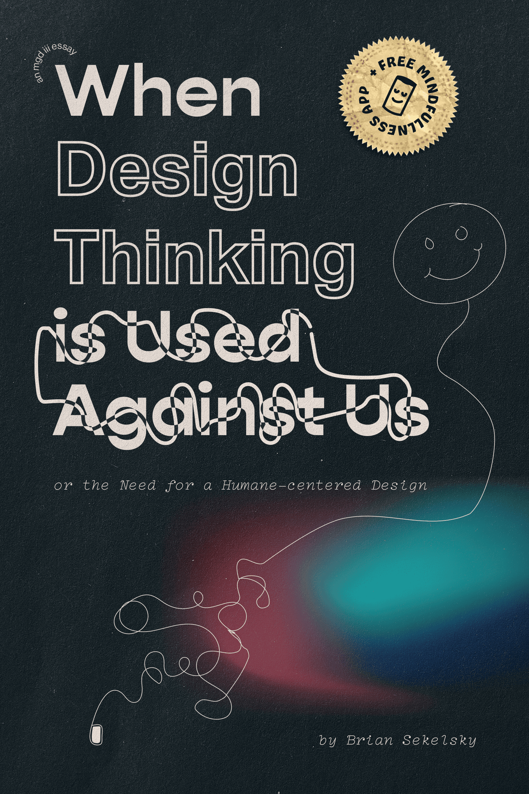
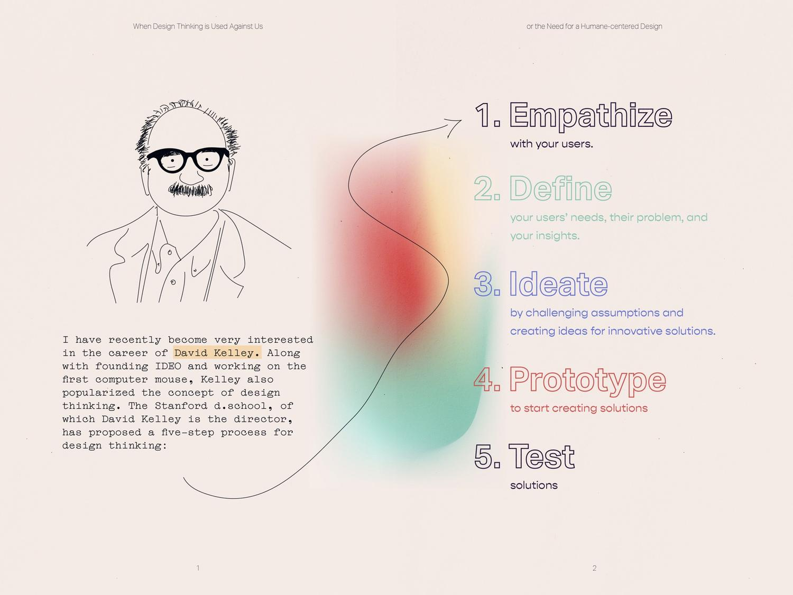
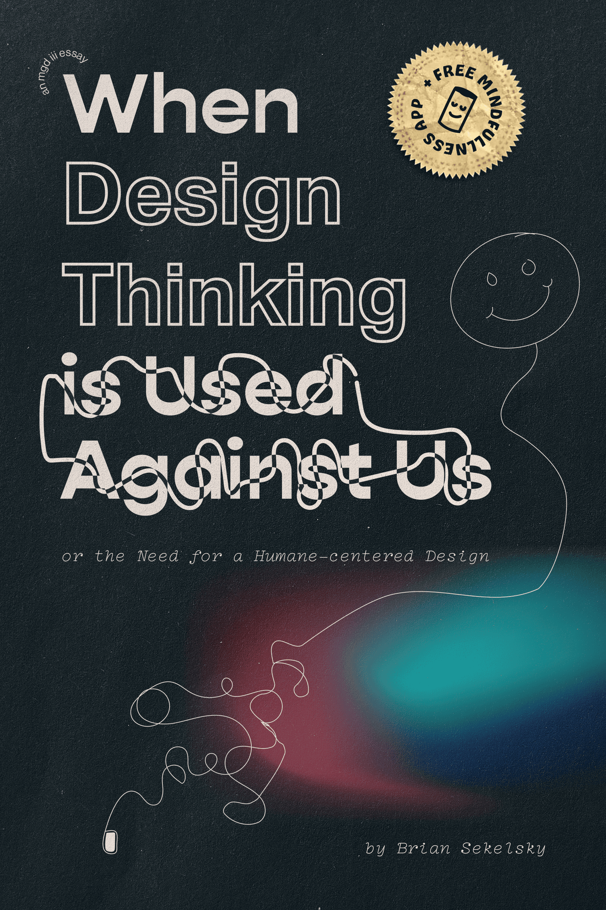
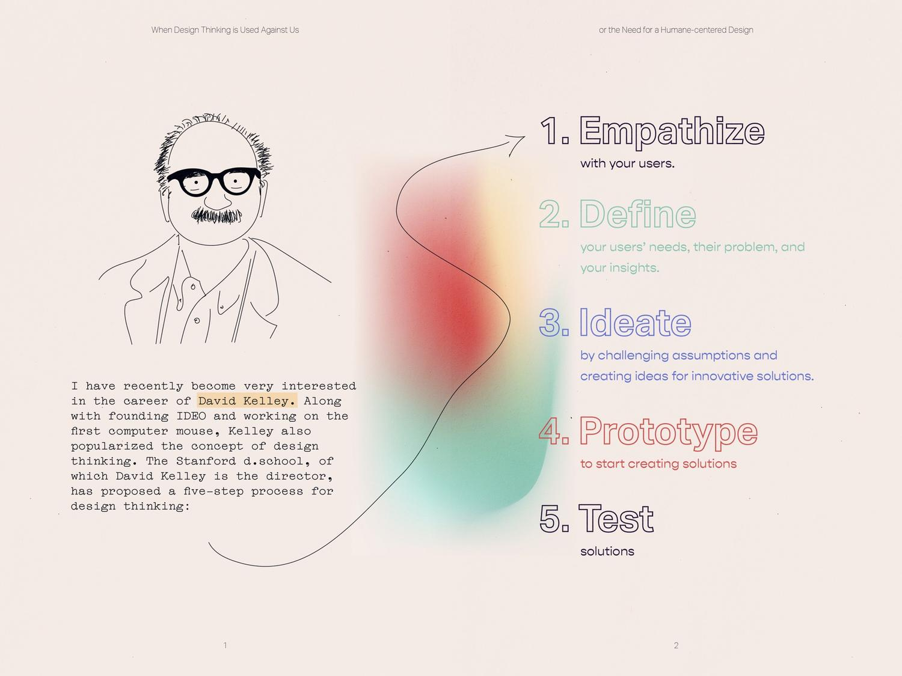
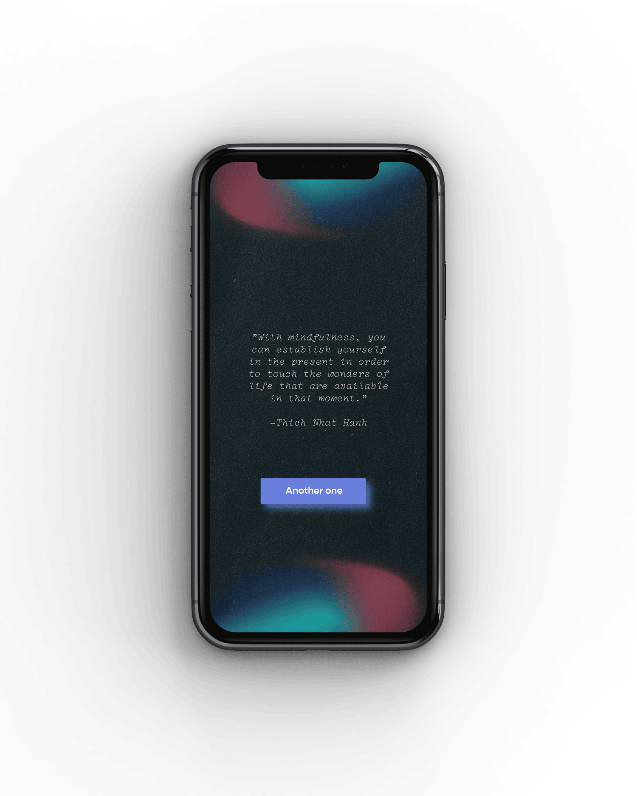
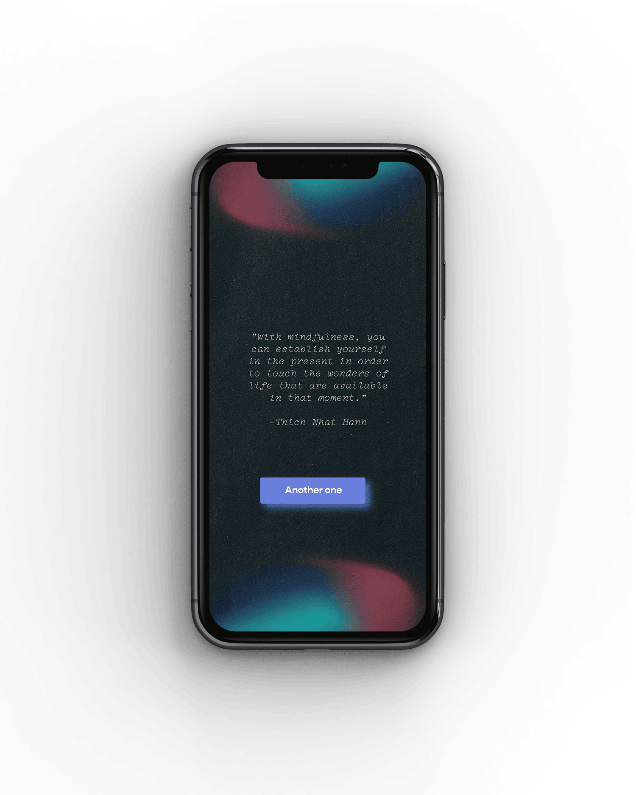

Wintessing Glaciers
Tools
ThreeJS
Javascript
HTML/CSS
ArcGIS
Processing
Figma
Miro
Ableton
Task
Web design + development
Objective
Translate climate related news content into a visual form that lends itself to the data.
During a workshop with Scott Reinhard (Graphics Editor at The New York Times), I explored data visualization related to climate change and glaciers. The final prototype is a website which features a globe populated by all of the world’s glaciers, designated by white specks. A few key glaciers have been identified and marked with larger sphere which turn red as the user scrolls and reads their corresponding text. All of the data comes from the World Glacier Monitoring Service. Using javascript and ThreeJS I was able to place all of the glaciers on this model of Earth.
Process
Starting with an investigation of current climate change issues, I came across several stories about melting ice caps. I was originally interested in the Alps in Italy. But later broadened my scope.
Collecting research in Figma
This eventually led me to glaciers, which have been changing size at alarming rates. I started out by sketching in Processing, using GPS coordinates and glacial masses from WGMS’s Fluctuations of Glaciers Databases. The simple sketch shows the world’s glaciers in their relative positions, their color fades from white to black in accordane with their mass. As years pass, the glaciers fade.
Processing Sketch


 



 
